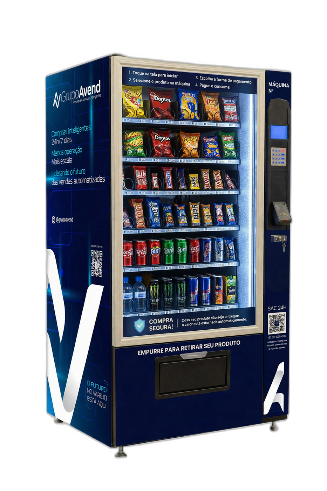

Payback 1ª Máquina
—
Média da rede · cenário base
Varejo Automatizado · Franquia de Vending Machines
Simule seu investimento com tributação real (MEI → Simples → LP), veja payback, patrimônio e expansão sob medida pro seu perfil.
Decomposição do faturamento mensal médio por máquina no cenário atual
Antes de mergulhar nas planilhas, deixa nosso fundador te contar — em 10 minutos — o que torna a AVEND diferente de qualquer outra opção no mercado de vending machines.
Quem não assiste sai com dúvidas. Quem assiste, decide.
5 razões pelas quais a AVEND é diferente de qualquer outra opção.
Não somos um experimento. +100 franqueados ativos, +150 máquinas em operação própria, presença em 14 estados. Você está comprando histórico, não promessa.
A 2ª máquina em diante sai por R$ 35.000 (vs. R$ 45k público), sem nova taxa de franquia. Único na categoria com mecânica de expansão alinhada ao crescimento do franqueado.
Único simulador do setor que mostra a transição real MEI → Simples Nacional → Lucro Presumido conforme você cresce. Sem maquiagem, sem promessa vazia.
Cada máquina é ativo do franqueado (~R$ 28.500 cada). Diferente de franquias onde o investimento vira "ponto" intangível, aqui você sai com equipamento revendável.
Cada máquina é monitorada em tempo real: vendas, estoque, falhas. Sistema de gestão homologado, treinamento de ~40h e canal de suporte ativo. Você decide com dados, não com intuição.
Os outros 80% do que importa estão lá em cima — números reais da rede, explicação do modelo, e o que ninguém mais te conta.
Você decide o ritmo — escolhe o caminho mais natural pra você.
Ajuste as variáveis e veja o efeito bola-de-neve do reinvestimento.
| Mês | Fase | Máq. | Faturamento | Imposto | Lucro Líq. | Reinv. / Pró-lab. | Caixa Exp. | Patrimônio | Evento |
|---|
Marcos de crescimento ao longo dos 60 meses — com base no cenário atual do simulador.
Analise as opções e encontre o caminho ideal para sua expansão.
| KPI | 1ª Máquina | 2ª Máquina | Aluguel |
|---|---|---|---|
| Investimento | — | — | R$ 3.000 |
| Payback estimado | — | — | 8–10 meses |
| Lucro líquido/mês | — | — | R$ 2.900–3.200 |
| Margem líquida | — | — | 25–30% |
| Regime tributário | — | — | Simples Nacional |
| Propriedade | Sim | Sim | Compra abatida |
| Flexibilidade | Média | Alta | Alta |
| Potencial de escala | ★★★ | ★★★★★ | ★★★★★ |
Você não está comprando uma máquina. Está comprando 10 anos de operação validada.
Acesso ao know-how validado
Programa completo cobrindo operação das máquinas, controle de estoque e negociação de pontos — a transferência do nosso modelo testado e aprovado.
Gestão facilitada, resultados amplificados
Sistema de telemetria e gestão para monitoramento em tempo real: performance de cada máquina, histórico de vendas, necessidade de reabastecimento e suporte técnico via sistema.
O ponto certo para o seu sucesso
Orientação estratégica para identificar pontos comerciais com alto potencial, com ferramentas de geolocalização e inteligência de mercado AVEND.
O mapa da sua operação de alta performance
Manuais detalhados cobrindo configuração da máquina, mix de produtos, manutenção e relacionamento com clientes — para replicar o sucesso da rede.
A força de uma marca consolidada
Você opera sob a marca AVEND, registrada no INPI. A rede contribui coletivamente para campanhas de marketing e fortalecimento de marca.
Seu negócio, suas regras — com nosso suporte
Modelo permite gestão flexível — operação integral ou renda complementar — mas exige envolvimento ativo do franqueado para o sucesso.
Transparência ganha confiança — abaixo, custos sob responsabilidade do franqueado.
O Brasil tem 1 vending machine para cada 2.500 habitantes. O Japão tem 1 para cada 25. Os EUA, 1 para cada 65. Não é uma anomalia — é uma janela de oportunidade que está se abrindo.
Digite a cidade e descubra na hora quantas máquinas o território comporta, quantas já operam e quantos pontos premium estão disponíveis para a sua operação.
— cidades · base IBGE 2025. Se algo não bater, informe a população estimada manualmente.
Densidade de vending machines em economias maduras × Brasil — quanto menor o número de habitantes por máquina, maior a penetração do varejo automatizado.
Pra equiparar a densidade dos EUA, o Brasil precisaria sair de ~100 mil para ~3,2 milhões de máquinas — um aumento de ~32×. Pra equiparar o Japão, seriam ~8,5 milhões. Em qualquer dos dois caminhos, há uma década inteira de crescimento à frente.
Indicadores globais e nacionais convergem: vending machines é uma das categorias mais consistentes de crescimento em retail.
Cashless já representa 75,8% da receita global do setor — alinhado com Pix e mobile no Brasil.
Crescimento médio anual 10–15% desde 2018. Smart vending com CAGR 11,58% projetado até 2032.
Maior CAGR do mundo em automação de varejo — Brasil lidera em ritmo de adoção (Grand View Research).
A barreira de pagamento que travou vending no Brasil por décadas foi removida. A máquina aceita Pix, débito, crédito e NFC.
Eixo invertido: barras menores = mais máquinas por pessoa = mercado mais maduro.
Vending machines não são alternativa — são solução estrutural para um problema que só vai piorar.
Das principais ocupações do comércio brasileiro apresentam indícios de escassez de mão de obra (jul/2025) — maior nível desde 2020, segundo a CNC.
Das ocupações do comércio registraram avanço de salário de admissão acima da média do mercado formal (jul/2024 a jul/2025). Custo trabalhista pressionado.
Um funcionário CLT custa até 3× o salário base com INSS, FGTS, férias, 13º, vale-alimentação e provisões. Salário mínimo subiu 7,7% só em 2024.
Menor taxa desde o início da série do IBGE. Significa poucos candidatos disponíveis e altíssima rotatividade nos pontos comerciais que dependem de atendimento humano.
Enquanto o varejo tradicional luta com escassez, custo crescente e turnover, a vending machine opera 24/7, sem CLT, sem férias, sem rotatividade — um único abastecedor atende 10 máquinas. A matemática só piora pro varejo humano daqui pra frente.
Os 4 vetores que tornam vending um ativo defensável na próxima década.
Pós-pandemia, 71% dos consumidores brasileiros priorizam economia de tempo (relatório PwC). Vending entrega produto em <15 segundos, sem fila, sem atendente.
Pix está em +90% dos adultos. As máquinas AVEND aceitam Pix, débito, crédito e NFC — barreira de fricção zero.
Self-checkout, supermercados sem caixa, postos sem frentista, restaurantes com QR-code. O brasileiro já se acostumou a operar sozinho — vending é o próximo passo natural.
Máquinas modernas reduzem perdas, otimizam logística por telemetria e têm menor pegada de CO₂ que loja física equivalente. Boa narrativa pra contratos B2B.
O mercado é grande, mas escolher a marca certa é o que define payback e tranquilidade.
Não somos um experimento. Somos uma operação auditada por reportagens da EXAME, PEGN, Portal do Franchising — com mais de 100 franqueados ativos e 150+ máquinas em operação própria.
A 2ª máquina em diante sai por R$ 35.000 (vs. R$ 45k público), sem nova taxa de franquia. Único na categoria com mecânica de expansão alinhada ao crescimento do franqueado.
Único simulador do setor que mostra a transição real MEI → Simples Nacional → Lucro Presumido à medida que sua receita cresce. Sem maquiagem, sem promessa vazia.
Cada máquina é monitorada em tempo real: vendas, estoque, falhas. O franqueado decide com base em dados, não em intuição. Suporte operacional contínuo via sistema.
Cada máquina é ativo do franqueado (~R$ 28.500 cada). Diferente de franquias onde o investimento vira "ponto" intangível, aqui você sai com equipamento revendável.
Logística e suporte distribuídos. Você não compra uma marca regional — compra presença nacional, com aprendizado consolidado de diferentes perfis de ponto: condomínio, hospital, indústria, academia, coworking.
Todos os dados desta página vêm de relatórios públicos, órgãos oficiais e associações setoriais — clique em qualquer item para validar a fonte primária.
Nota metodológica: algumas referências apresentam ranges distintos (ex.: 80–102 mil máquinas no Brasil). Em divergências, mantivemos a faixa completa em comparativos e adotamos a leitura mais conservadora em projeções financeiras. Última revisão: abril/2026.
Quem já está operando e como é a rede AVEND por dentro.
Equipamento testado em campo por mais de uma década. Pagamento por Pix, débito, crédito e NFC. Sistema 24/7 com telemetria em tempo real e SAC para o consumidor diretamente na máquina.
